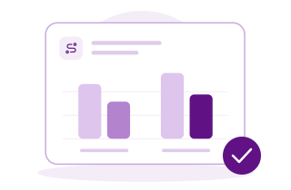
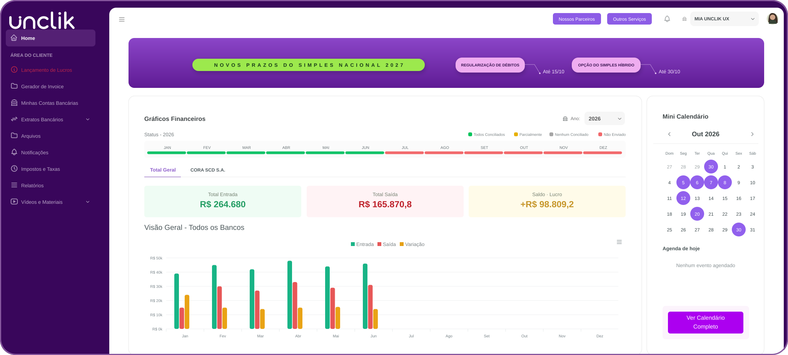
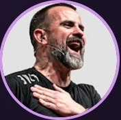
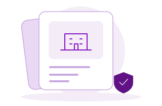

Quero abrir minha empresa
Comece com orientação sobre as atividades do seu CNPJ, o enquadramento tributário e os documentos necessários. Nossa equipe conduz o processo e você acompanha as etapas pelo HUB Unclik.
Entender a abertura de empresaSeu negócio tem plataformas de venda, comissões, lançamentos ou contratos de serviço? Conte com uma equipe que conhece essa rotina, explica seus impostos e ajuda você a organizar o próximo passo.
Na Unclik, você tem atendimento humano e tecnologia própria para acompanhar sua empresa de perto, de onde estiver.
Mais de 600 empresas atendidas.
Atendimento online em todo o Brasil.

atendendo o mercado digital.
em economia tributária para nossos clientes.
contabilizados em 2025.
Comece com orientação sobre as atividades do seu CNPJ, o enquadramento tributário e os documentos necessários. Nossa equipe conduz o processo e você acompanha as etapas pelo HUB Unclik.
Entender a abertura de empresaSe você precisa explicar seu negócio digital toda vez que pede ajuda, vale conhecer uma equipe especializada. Avaliamos sua empresa e orientamos a transferência dos documentos e das responsabilidades contábeis.
Conhecer a transferência de contabilidadeSeu negócio cresceu ou a atividade mudou? Analisamos sua situação e orientamos a migração para microempresa, com atenção às obrigações e à nova rotina contábil.
Entender a migração de MEI para MEO que você vende, como recebe e para quem presta serviço fazem diferença na contabilidade. Por isso, nossa orientação considera as particularidades da sua atividade.
Vamos conversarCursos, e-books, mentorias, comissões e receitas compartilhadas. Ajudamos a organizar a contabilidade da sua operação e orientar o tratamento das receitas e a emissão de notas.
Conversar sobre minha atividadeAtendimento para gestores de tráfego, agências de marketing e de lançamento, com orientação sobre atividades, faturamento de serviços e obrigações da empresa.
Conversar sobre minha atividadeSocial media, copywriters, videomakers e gestores de automação encontram uma equipe que entende sua prestação de serviços e orienta a rotina do CNPJ.
Conversar sobre minha atividadeSocial media, copywriters, videomakers e gestores de automação encontram uma equipe que entende sua prestação de serviços e orienta a rotina do CNPJ.
Conversar sobre minha atividadeSocial media, copywriters, videomakers e gestores de automação encontram uma equipe que entende sua prestação de serviços e orienta a rotina do CNPJ.
Conversar sobre minha atividadePublis, parcerias e monetização de conteúdo fazem parte do seu trabalho. Conte com apoio para formalizar sua atividade e organizar seus recebimentos e impostos.
Conversar sobre minha atividadeSocial media, copywriters, videomakers e gestores de automação encontram uma equipe que entende sua prestação de serviços e orienta a rotina do CNPJ.
Conversar sobre minha atividadeAtendimento para gestores de tráfego, agências de marketing e de lançamento, com orientação sobre atividades, faturamento de serviços e obrigações da empresa.
Conversar sobre minha atividadeContabilidade para devs, empresas de tecnologia e startups, considerando as atividades exercidas e a estrutura de cada operação.
Conversar sobre minha atividadeCursos, e-books, mentorias, comissões e receitas compartilhadas. Ajudamos a organizar a contabilidade da sua operação e orientar o tratamento das receitas e a emissão de notas.
Conversar sobre minha atividadeAtendimento para gestores de tráfego, agências de marketing e de lançamento, com orientação sobre atividades, faturamento de serviços e obrigações da empresa.
Conversar sobre minha atividadeConsultores, arquitetos, engenheiros, representantes e outros profissionais também contam com orientação contábil e atendimento online para administrar sua empresa.
Conversar sobre minha atividadePublis, parcerias e monetização de conteúdo fazem parte do seu trabalho. Conte com apoio para formalizar sua atividade e organizar seus recebimentos e impostos.
Conversar sobre minha atividadePublis, parcerias e monetização de conteúdo fazem parte do seu trabalho. Conte com apoio para formalizar sua atividade e organizar seus recebimentos e impostos.
Conversar sobre minha atividadeVocê quer saber por que está pagando aquele imposto, quais documentos precisa enviar e o que muda quando seu faturamento cresce. Nossa equipe explica cada assunto com clareza e orienta os próximos passos.
O atendimento acontece pelo WhatsApp e por e-mail, com pessoas de verdade e departamentos especializados nas rotinas da sua empresa.
Escrituração, apuração de impostos, declarações e demonstrações contábeis, de acordo com as obrigações da sua empresa e o escopo contratado.

Analisamos as características do negócio para orientar o enquadramento tributário e avaliar oportunidades legais de economia. Para decisões como a Reforma Tributária, usamos ferramentas próprias de simulação para comparar cenários.
Conte com orientação sobre emissão de notas, pró-labore e obrigações trabalhistas. Configuração de sistemas, emissão de notas pela equipe e atendimento a funcionários seguem as condições de cada contratação.
Criamos uma plataforma própria para aproximar você das informações do seu negócio. No HUB Unclik, documentos, processos e dados financeiros ficam reunidos para facilitar sua rotina e a troca de informações com nossa equipe.

Acompanhe a abertura do CNPJ e outros processos da empresa, com histórico das etapas e visibilidade do que está em andamento.
Envie seus extratos bancários em OFX e classifique as movimentações com apoio de inteligência artificial. A partir das informações enviadas e classificadas, acompanhe entradas, saídas e fluxo de caixa em gráficos.
Acesse guias, taxas e avisos de prazos. Consulte o DAS e as informações de faturamento para entender melhor os valores apurados.
Tenha acesso a arquivos, relatórios, gerador de invoice, vídeos e materiais exclusivos para clientes.
A tecnologia organiza as informações. Nossa equipe ajuda você a entendê-las e usá-las nas decisões.
Quero conhecer o HUB UnclikJá sou cliente
“São uma contabilidade que eu tenho TOTAL confiança, sempre dispostos a ajudar, sempre informando sobre tudo que está acontecendo …”

“… Ter uma contabilidade especializada no mercado digital faz toda diferença! Recomendo fortemente!”

“Confio e indico a Unclick. Sou cliente há quase 2 anos e não troco. Tudo muito assertivo, prático e organizado. …”

“… a Unclik não é só a melhor contabilidade que já trabalhei, eles são a melhor prestação de serviço que já vi no mercado.”

“Sou cliente há alguns anos, sempre me ajudam com tudo o que preciso! Recomendo a todos!”

“Eu gosto muito do trabalho de vocês, a comunicação é muito fácil, vocês sempre respondem as minhas dúvidas e adoro os informes por e-mail. Realmente indico demais!”
“Eu já indiquei várias vezes! Pois sinto que a minha empresa está sendo bem cuidada e com potencial de crescimento por ter vocês.”

“Estamos há 5 anos com o time da Unclik e eu me sinto muito feliz por cuidarem tão bem da IGT International Coaching. Eles me dão a tranquilidade de me preocupar com o que realmente importa. Parabéns e Vamoooooo!”
Nossos planos consideram o faturamento, o regime tributário e as necessidades da sua empresa. Vamos entender sua operação para apresentar o escopo e o investimento adequados.
Para empresas com faturamento de até R$ 50 mil por mês.
Rotina contábil, pró-labore dos sócios, envio de guias de impostos e taxas, balanço patrimonial e DRE anual, com suporte por WhatsApp e e-mail.
Para empresas com faturamento de até R$ 150 mil por mês.
Inclui os serviços do Start e acrescenta reuniões por videochamada e planejamento tributário anual para acompanhar as decisões da empresa.
Para empresas com faturamento de até R$ 250 mil por mês.
Inclui os serviços do Plus e atendimento de departamento pessoal para até dois funcionários CLT.
Conheça o VIP, com gerente dedicado e serviços personalizados, ou solicite uma proposta para operações no Lucro Real e outras necessidades específicas.
12 mensalidades por ano, sem 13º honorário e sem fidelidade. Serviços adicionais têm contratação e condições próprias. A sede virtual faz parte dos planos, conforme a viabilidade da atividade e do município.
Além da contabilidade, você pode contratar soluções complementares de acordo com sua necessidade:
apoio operacional em contas a pagar e receber, conciliação bancária e relatórios gerenciais.
parametrização de sistemas e serviços de gestão e emissão conforme o escopo contratado.

certificado digital, sede virtual e registro de marca.
Informação acessível para abrir sua empresa, cuidar da rotina e acompanhar as mudanças que afetam quem empreende.
Abertura de CNPJ, atividades, notas fiscais, impostos e gestão de negócios digitais, com explicações para aplicar no dia a dia.
Explorar o blogEntenda processos e temas contábeis com orientações em vídeo, no seu ritmo.
Assistir aos vídeos da UnclikNossa equipe usa ferramentas próprias de cálculo e simulação tributária para analisar sua operação e explicar os cenários possíveis.
Acessar o simuladorNosso atendimento é online e alcança empresas em todo o Brasil. Na conversa inicial, verificamos a viabilidade para sua atividade e seu município.
Você tem suporte humano pelo WhatsApp e por e-mail. O HUB reúne informações e facilita os processos. Nossa equipe orienta você nas dúvidas e na rotina contábil. Reuniões por videochamada estão previstas a partir do plano Plus.
Sim. Orientamos a abertura da empresa, desde a definição das atividades e a análise do enquadramento até os documentos necessários e o acompanhamento do processo.
Primeiro, entendemos a situação da sua empresa. Depois, orientamos a documentação e a transferência da responsabilidade contábil, com alinhamento das etapas para iniciar o atendimento.
Sim. Avaliamos as características da operação e comparamos cenários para orientar a escolha. O planejamento tributário anual faz parte dos planos Plus e Pro; análises específicas seguem o escopo contratado.
O HUB permite enviar e classificar movimentações e acompanhar os dados financeiros informados. Para ter apoio operacional em contas a pagar e receber, conciliação e relatórios, você pode contratar o BPO financeiro separadamente.
O investimento depende do faturamento, do regime tributário e dos serviços necessários. Nossa equipe apresenta uma proposta com o plano, as entregas e os valores para sua empresa.
A sede virtual pode ser uma alternativa para registrar o CNPJ. Nossa equipe verifica a viabilidade de uso conforme sua atividade e o município.
Conte o que você faz e em que momento sua empresa está. Nosso time vai entender sua necessidade, explicar como podemos ajudar e apresentar os próximos passos.
Na Unclik, você tem atendimento humano e tecnologia própria para acompanhar sua empresa de perto, de onde estiver.